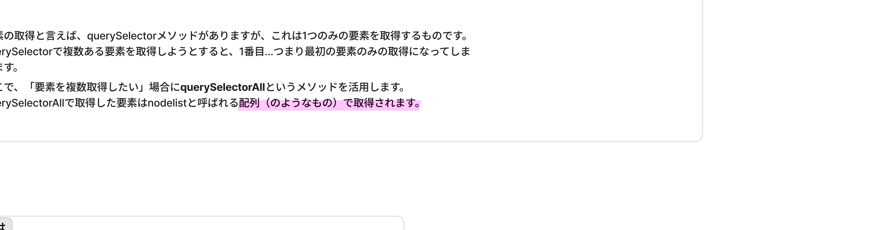
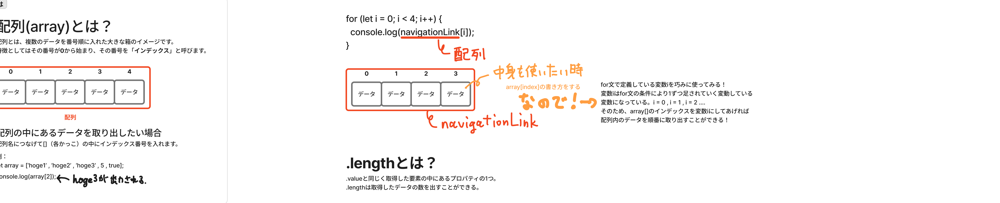

forEach で書き直し、「コピペじゃなくプログラム化する」感覚を体験。
⏱タイムマップ（時間割）
区切りベース（タイムスタンプなしの文字起こしのため）。★★★＝特に重要。
| 区切り | 内容 | 重要度 |
|---|---|---|
| 1時間目 序盤 | ハンバーガーメニュー実装演習（昨日の続き・ゼロから書き直し） | ★★★ |
| 1時間目 | Google Drive から「ハンバーガー演習」フォルダをダウンロード→各自実装 | ★★ |
| 2時間目 序盤 | querySelectorAll の解説（複数要素を nodelist で取得） | ★★★ |
| 2時間目 | 配列(array)とは：番号付き(0始まり)の箱の集まり | ★★★ |
| 2時間目 | 配列名[インデックス] で中身を取り出す書き方 | ★★★ |
| 3時間目 | ★for文の構造：for (let i=0; i<4; i++) {...} | ★★★ |
| 3時間目 | 変数 i を array[i] のインデックスに使う発想 | ★★★ |
| 3時間目 | .length プロパティで要素数を自動取得（"こんにちは!".length → 6） | ★★★ |
| 3時間目 終盤 | navLinks[i].addEventListener('click', ...) で全リンクにイベント付与 | ★★★ |
| 3時間目 終盤 | 「コピペは急なエラーのきっかけ」プログラム化の考え方 | ★★ |
| 4時間目 序盤 | おまけ：オブジェクト形式（キー: 値）の話に少し触れる | ★ |
| 5時間目 序盤 | ★forEach メソッドの紹介（配列専用の便利ループ） | ★★★ |
| 5時間目 | for文をforEachに書き換える演習 | ★★ |
| 5時間目 | 命名の慣習：navigationLinks（複数形）／navigationLink（単数） | ★★ |
| 5時間目 終盤 | 残り1時間は質問タイム＆自由制作時間 | — |
⭐今日の最重要10項目
querySelectorAll
複数の要素を NodeList（配列のようなもの） でまとめて取得。document.querySelectorAll('.link')
配列＝箱の集まり
番号は 0始まり。番号のことを 「インデックス」 と呼ぶ。array[2] で3番目を取り出す。
配列の書き方
let array = ['hoge1', 'hoge2', 5, true]; 文字列・数値・真偽値何でも入る。
for文の構造
for (let i=0; i<4; i++) { ... } 「初期値・条件・増減」の3点セット。条件が true の間繰り返す。
変数 i がインデックス
ループのたびに i が 0, 1, 2, 3... と増える。それを array[i] に渡して順番に取り出す。
.length で自動化
固定の 4 ではなく array.length。要素が増減しても自動で対応する賢いコード。
全リンクにクリックイベント
navLinks[i].addEventListener('click', ...) をループの中で。1つずつ書かなくていい。
コピペは罪
同じ処理を回数分書くのは エラーの温床。ループで自動化＝プログラム的考え方。
forEach メソッド
array.forEach((item) => {...})。配列専用のもっと簡潔なループ。for文より読みやすい。
命名は複数/単数
取得結果は navigationLinks（複数形）、forEach の中の1個は navigationLink（単数）。マナー的なお作法。
🔁ハンバーガーメニュー復習演習（ゼロから）
昨日の最後で予告した 「ハンバーガーメニューの開閉」 実装を、A先生がサンプルサイトを共有してゼロから書き直しする演習からスタート。
- Google Drive で共有された「ハンバーガー演習」フォルダをダウンロード
- JavaScriptディレクトリの中に配置
- README（A先生は「爆弾ファイル」と命名 笑）を読む
- 各自で
classList.toggle()を使って開閉ロジックを書く - 1時間ほど作業時間 → A先生が解説
// アイコンと、開閉対象の各要素を取得 const hamburgerIcon = document.querySelector('#hamburgerIcon'); const globalNavigation = document.querySelector('#globalNavigation'); const closeArea = document.querySelector('#closeArea'); // アイコンをクリックしたら .open を付け外し（CSS側で見え方が変わる） hamburgerIcon.addEventListener('click', () => { hamburgerIcon.classList.toggle('open'); globalNavigation.classList.toggle('open'); closeArea.classList.toggle('open'); });※ CSS 側で
.open が付いたときのスタイル（×への変形・ナビ表示・暗幕表示）は既に書いてある前提。JS はクラスの付け外しだけ。
🎯querySelectorAll（複数要素の取得）
今日の本題。「メニュー内のAタグを全部まとめて取得したい」 ような場面で querySelector は1番目しか取れない。そこで querySelectorAll。
document.querySelector('.link')← 最初の1個だけ取得document.querySelectorAll('.link')← マッチする全部を取得（NodeList ＝ 配列のようなもの）
// ナビゲーション内の全Aタグを一括取得 const navigationLinks = document.querySelectorAll('.global-navigation a'); console.log(navigationLinks); // → NodeList(4) [a, a, a, a] ← 4個の要素が「配列っぽい形」で取れる
.length が使える・forEach も使えるので、実用上は配列とほぼ同じ扱いでOK。
📦配列(array)とは？

- 複数のデータを番号順に入れる「大きな箱」
- 番号は 0 から始まる（1ではない）
- この番号のことを 「インデックス」 と呼ぶ
- 取り出すときは
配列名[インデックス] - 中身は何でも混ぜられる（文字列・数値・真偽値…）
// 文字列・数値・真偽値の混在もOK let array = ['hoge1', 'hoge2', 'hoge3', 5, true]; console.log(array[2]); // → 'hoge3' （0,1,2番目）
🔁for文（ループの基本）
![先生の板書：ループ文〜for文〜。プログラムの得意なことにもう一つ「繰り返す」がある。例えば6件まで記事のカードを表示するとかを繰り返し分で表現すると条件は「6以下」となり処理内容は「カードの表示」。html等で同じコードを6回書くのではなく、繰り返し(for文)で一度のコードの塊を6回繰り返すなどということができたりする。右側に for (let i=0; i < navigationLink.length; i++) { navigationLink[i].addEventListener('click', ...) classList.removeなど } の完成形コードと「ループ文で作らなかったら？」の手書き](img/for_syntax.png)
for (初期値; 繰り返し条件; 条件を満たす計算) { // 繰り返したい処理 }代表的な書き方：
for (let i = 0; i < 4; i++) { ... }i = 0 から始まり、i < 4 の間だけ、i++（i+1） しながらブロックを実行。
// 0,1,2,3 と console に出力される for (let i = 0; i < 4; i++) { console.log(i); } // 出力: 0, 1, 2, 3
変数 i を「配列のインデックス」として使う

navigationLink[i] の i を for文の変数にすることで、配列を順番に取り出せる
// navigationLinks の中身を順番に表示 for (let i = 0; i < 4; i++) { console.log(navigationLinks[i]); } // 出力: <a>サービス</a>, <a>About</a>, ... ←各Aタグが1つずつ
[i] に入れる」——たったこれだけで、配列を1個ずつ全部取り出せる。querySelectorAll で取った要素群を1個ずつ操作したいときの定番パターン。
📏.length プロパティ（要素数の自動取得）
上の例で i < 4 と 4 を固定で書いたが、これは危険。リンクが5本に増えた瞬間に4のまま＝最後の1本が取れない。
.value と同じく、取得した要素や配列の中にあるプロパティの1つ。「データの数（要素数）」を返してくれる。
// 文字列の長さも .length let msg = 'こんにちは!'; console.log(msg.length); // → 6（6文字） // 配列の要素数も .length console.log(navigationLinks.length); // → 4
for (let i = 0; i < navigationLinks.length; i++) { console.log(navigationLinks[i]); }→ Aタグが増えても減ってもJSは触らなくていい。配列の中身に合わせて自動で回数が変わる。「非常にプログラム的な考え方」。
⚠️「コピペ厳禁」プログラム的考え方
もし for文を使わずに 同じことを4回書いた らどうなるか？
// for文を使わない版（悪い例） navigationLinks[0].addEventListener('click', () => { /* ... */ }); navigationLinks[1].addEventListener('click', () => { /* ... */ }); navigationLinks[2].addEventListener('click', () => { /* ... */ }); navigationLinks[3].addEventListener('click', () => { /* ... */ }); // Aタグが5本に増えたら…全部書き直し
- コピペは急なエラーのきっかけ。ケアレスミスの温床。
- 人がやるのが一番怪しい。エラーの確率が高いのは「人」。
- だからこそ プログラム化して自動化 する。ループ文で囲んで条件と実行内容を書く。
✨forEach メソッド（配列専用の便利ループ）
5時間目、for文と同じことをもっと短く・読みやすく書ける別パターンを紹介。
- 構文：
if/forなど、JavaScript の「文法」そのもの - メソッド：
querySelectorAll/classList.remove/ 今回のforEachなど、変数や要素に「ドット」でつなげて呼ぶ機能
forEach の書き方
配列.forEach((中身のデータ) => { // 各データに対する処理 });
パラメータ（カッコの中の変数名）は自分で命名。意味のある名前にする（後述）。
for文 → forEach への書き換え
for文
for (let i = 0; i < navigationLinks.length; i++) { navigationLinks[i].addEventListener('click', () => { globalNavigation.classList.remove('open'); }); }
forEach（読みやすい！）
navigationLinks.forEach((navigationLink) => { navigationLink.addEventListener('click', () => { globalNavigation.classList.remove('open'); }); });
- for文も forEach もできることは同じ
- ただし 配列の中身を取り出すだけなら forEach の方が条件を自分で書かなくていい＝楽
- 現場では「配列処理＝forEach」が定番
- for文はもっと汎用（配列以外の繰り返しも書ける）なので、両方押さえておく
🏷️命名の慣習（複数形と単数形）
これは「あるある」のお作法。A先生も「英語は弱いけど複数形ぐらいは知ってる」と笑いながら。
- navigationLinks（複数のリンク群）
- items（複数のアイテム）
- cards（複数のカード）
// navigationLinks（複数形） を 1個ずつ navigationLink（単数）として扱う navigationLinks.forEach((navigationLink) => { navigationLink.addEventListener('click', ...); }); // items → item / cards → card などコードが英文として自然に読めるようになる。
🗂️おまけ：オブジェクトの形式
4時間目、A先生がオブジェクトの話に少し触れた（少しややこしかったが要点だけ）。
- 配列：キー（番号）は
0, 1, 2, 3...自動採番。array[0]で取り出す - オブジェクト：キーが自分で名前を付けた文字列。
car.nameやcar['name']で取り出す
// オブジェクトの例（車1台ぶんのデータ） const car = { name: 'プリウス', maker: 'TOYOTA', year: 2024 }; console.log(car.name); // → 'プリウス'
※ 今日はサラッと紹介のみ。本格的な使い方は明日以降。
📚用語集
| 用語 | 意味 |
|---|---|
| querySelectorAll | マッチする全要素を NodeList で取得するメソッド |
| NodeList | querySelectorAll の返り値の型。配列のような形（番号でアクセス可・.length・forEach あり） |
| 配列 / array | 複数のデータを番号順に入れた箱。[要素1, 要素2, ...] |
| インデックス | 配列の番号。0始まり |
| ループ文 / 繰り返し処理 | 同じ処理を回数分だけ実行する仕組み |
| for文 | 最もシンプルなループ構文。for (初期値; 条件; 増減) {...} |
| i / 変数 i | for文で使う慣習的なカウンタ変数名（index の i） |
| i++ | i = i + 1 の省略形。1ずつ増やす |
| .length | 配列の要素数 / 文字列の文字数を返すプロパティ |
| forEach メソッド | 配列専用の便利ループ。配列.forEach((要素) => {...}) |
| 無名関数 | 名前を付けずにその場で書く関数。コールバックでよく使う |
| 構文 vs メソッド | 構文＝言語の文法（if/for）／メソッド＝変数や要素にドットで呼ぶ機能 |
| オブジェクト | キー（名前）と値のペアで構造化したデータ。{name: '...', maker: '...'} |
✅宿題・復習チェック
- ハンバーガーメニュー演習を最後まで通す（querySelectorAll + forEach で全Aタグに閉じる動作）
- for文を
for (let i = 0; i < ◯.length; i++)で書く癖をつける（数を固定にしない） - forEach で書き換えてみる：変数名は単数形に（
navigationLinkなど） - 📝 A先生からのお題：いろんなWebサイトを見て「どこに JS が使われているか」を観察。ハンバーガー以外にも、開閉・タブ切替・モーダル等いっぱいある。
- 明日まで JavaScript。明後日以降は レスポンシブWebデザインの制作時間（実装＋A先生・B先生からのフィードバック）。これまでに作ったポートフォリオに JS を導入するチャンス。
- 余裕がある人：オブジェクト（
{key: value}形式）も軽く調べておくと明日の理解が早い
- JavaScript は明日まで（5日目）
- その後 1週間ちょい、ガッキー自身のプロジェクト制作時間（HTML/CSS/JS統合）
- 制作中は A先生・B先生が見守り＋呼べばコメント・フィードバックするスタイル
- カンプ（デザインカンプ）にテキストコメントを入れる形式もアリ
💬先生のことば
コピペは急なエラーのきっかけです、ケアレスミスのきっかけです。なのでそれより、プログラム化して自動化させた方がよっぽど安心安全です。── プログラム的考え方の真髄
人がやることが一番エラーの確率が高いので、こういったものは一個一個書くのではなく、ちゃんと繰り返し処理とかをしてループ文等で囲んで、しっかり条件を書いて実行内容を書く。── 自動化が安全
今からやることが for文でできることなので、別に for文を覚えていればOKです。ただ実際の現場・お仕事になってくると、配列を取り出すぐらいだったら forEach の方が楽よね、っていう考え方があるので、こういう書き方するよ、っていうイメージです。── forEachを使う理由
普段見てもらえているうちのサイトのどこに JS が使われているか、調べてみてもらえたら。── 観察眼を養うお題
かなり難しいとは思いますが、これを覚えておく必要があるので、ちょっとしっかりどこかで触れておいてください。── ループ＋配列の重要性